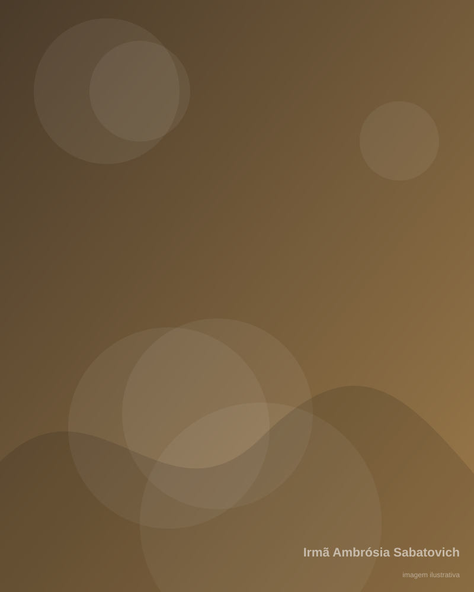

Irmã Ambrósia — uma história de amor e heroísmo
A vida de Ana Sabatovycz, a Irmã Ambrósia, e o legado que dá nome ao nosso colégio.

Da Ucrânia ao Paraná
Ana Sabatovycz nasceu na Ucrânia em 1894 e chegou ao Brasil ainda bebê, com sua família, em meio ao grande movimento de imigração ucraniana para o Paraná.
Cresceu em uma comunidade de imigrantes que trabalhava a terra e preservava com cuidado sua fé, sua língua e suas tradições. Em 1911, ingressou na congregação das Irmãs Servas de Maria Imaculada, dedicando-se à vida religiosa e ao serviço às comunidades.
Como Irmã Ambrósia, atuou em diferentes colônias ucranianas do Paraná antes de chegar à Colônia Marcelino, sempre unindo educação, cuidado e fé.
A chegada em 1931
Em 1931, Irmã Ambrósia chegou à Colônia Marcelino ao lado de outras duas irmãs. Juntas, participaram da formação da comunidade religiosa local e da organização da vida comunitária.
Seu trabalho foi múltiplo e incansável. Ela foi:
- Professora — ensinava as crianças da colônia a ler, escrever e contar.
- Catequista — acompanhava a formação religiosa das famílias.
- Enfermeira — cuidava dos doentes em uma região sem atendimento médico regular.
- Cuidadora da comunidade — apoiava as famílias nos momentos de necessidade.
- Incentivadora da educação — acreditava que o estudo abria caminhos para os filhos dos agricultores.
- Preservadora da língua e da cultura ucraniana — mantinha vivas as tradições da comunidade.
O sacrifício
No dia 28 de fevereiro de 1943, Irmã Ambrósia deu a própria vida para proteger uma jovem que estava sob seus cuidados.
Diante de uma situação de violência, ela não hesitou: colocou-se entre a agressão e a jovem, protegendo-a com o próprio corpo. Irmã Ambrósia foi gravemente ferida e morreu em consequência do ataque. A jovem sobreviveu.
A comunidade da Colônia Marcelino recorda esse episódio com profundo respeito. Mais do que a violência sofrida, o que permanece é o gesto: uma vida inteira dedicada a ensinar, cuidar e proteger, coroada por um ato de coragem e amor ao próximo.
“Ninguém tem maior amor do que aquele que dá a vida pelos seus amigos.”
Irmã Ambrósia é lembrada por seu heroísmo, e existe um processo de beatificação relacionado à sua história, acompanhado pela Igreja Greco-Católica Ucraniana e pela congregação das Irmãs Servas de Maria Imaculada.
A trajetória de Irmã Ambrósia
- 1894
Nascimento
Ana Sabatovycz nasce na Ucrânia. Ainda bebê, emigra com a família para o Brasil, estabelecendo-se no Paraná.
- 1911
Vida religiosa
Ingressa na congregação das Irmãs Servas de Maria Imaculada e recebe o nome de Irmã Ambrósia.
- 1931
Chegada à Colônia Marcelino
Ao lado de outras duas irmãs, chega à Colônia Marcelino e participa da formação da comunidade religiosa local, atuando como professora, catequista e enfermeira.
- 1943
Sacrifício heroico
Em 28 de fevereiro, dá a própria vida para proteger uma jovem sob seus cuidados. Seu gesto marca para sempre a memória da comunidade.
- Hoje
Legado preservado pelo CEIAS
O Colégio Estadual do Campo Irmã Ambrósia Sabatovich carrega seu nome e seu exemplo: educar, cuidar e servir à comunidade. Todos os anos, a escola relembra sua história com estudantes e famílias.
O legado continua na sala de aula
O exemplo de Irmã Ambrósia inspira o trabalho pedagógico do CEIAS: uma educação que acolhe, cuida e transforma a comunidade.